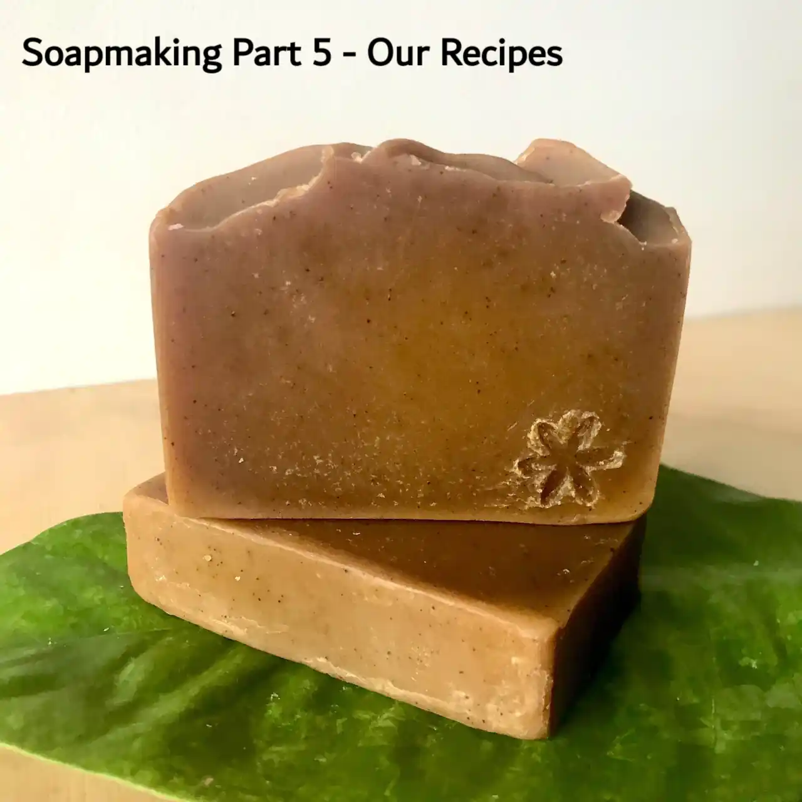

Our Soap Recipes for Inspiration | Part 5: Learn How to Make Natural Soap!

Welcome to Part 5 of the soapmaking for beginners series! Here we will share with you some of our favourite soapmaking recipes with accompanying photos.
We do not provide precise measurements for each ingredient because different oils you use may have different SAP values, lye purity may be different, and most importantly you will benefit from calculating your own recipes.
We make our soaps in a humid environment at around 26°C. The soaps are minimally insulated in silicone moulds and they all went through gel phase (except the liquid soap). We hpe they will be of help in your own recipe creations!
Soap Recipes (click to go there):
Recipe 1: 100% Coconut Oil Household Soap, unscented

This coconut oil soap has a low superfat, as it is designed to be a very hard and cleansing soap. It is perfect to use when washing dishes with a loofah; grate into small pieces to wash laundry or clean surfaces with a wet cloth.
Ingredients:
- Virgin coconut oil (100%)
- Sodium hydroxide @ 5% discount (superfat)
- Citric acid @ 1% of total oil weight
- Water @ 1.5:1 water:NaOH
Tip: as this is a very hard soap, you may have to unmould and cut this soap within 12 hours or increase superfat %.
Recipe 2: Turmeric Red Clay Soap with Shea Butter

Ingredients:
- Virgin coconut oil
- Shea butter @ 10% of coconut oil weight
- Moroccan red clay @ 1% of total oil weight
- Clove essential oil @ 0.5% of total oil weight
- Turmeric @ 1.5% of total oil weight
- Citric acid @ 1% of total oil weight
- Sodium hydroxide @ 20% discount (superfat)
- Water @ 1.5:1 water:NaOH
Recipe 3: Gentle Kaolin Clay Soap with Shea Butter, unscented

Ingredients:
- (Organic)Virgin coconut oil
- (Organic)Shea Butter @10% of coconut oil
- White kaolin clay @ 1% of total oil weight
- Citric acid @ 1% of total oil weight
- Sodium hydroxide @20% discount (superfat)
- Water @ 1.5:1 water:NaOH
Recipe 4: Red & White Clay Sea Salt Soap

Ingredients:
- Virgin coconut oil
- Shea butter @ 10% of coconut oil weight
- Moroccan red clay @ 2% of total oil weight
- White kaolin clay @ 2% of total oil weight
- Essential oils of your choice
- Organic sea salt @ 20% of total oil weight
- Citric acid @ 1% of total oil weight
- Sodium hydroxide @ 20% discount (superfat)
- Water @ 1.5:1 water:NaOH
Tip: in humid climates, this soap will ‘sweat’ if left out. Keep it in airtight containers to avoid that.
Recipe 5: Household Liquid Soap Paste


Liquid soap paste can be dissolved in water — 1:1 for dishes, 1:1.5 for gentle laundry soap etc.
Ingredients:
- Virgin coconut oil
- Potassium hydroxide (90% purity) @ 1% discount (superfat)
- Water @ 3:1 water:KOH
Check out our liquid soap tutorial using potassium hydroxide.
You can also watch a video tutorial on PeerTube or YouTube.